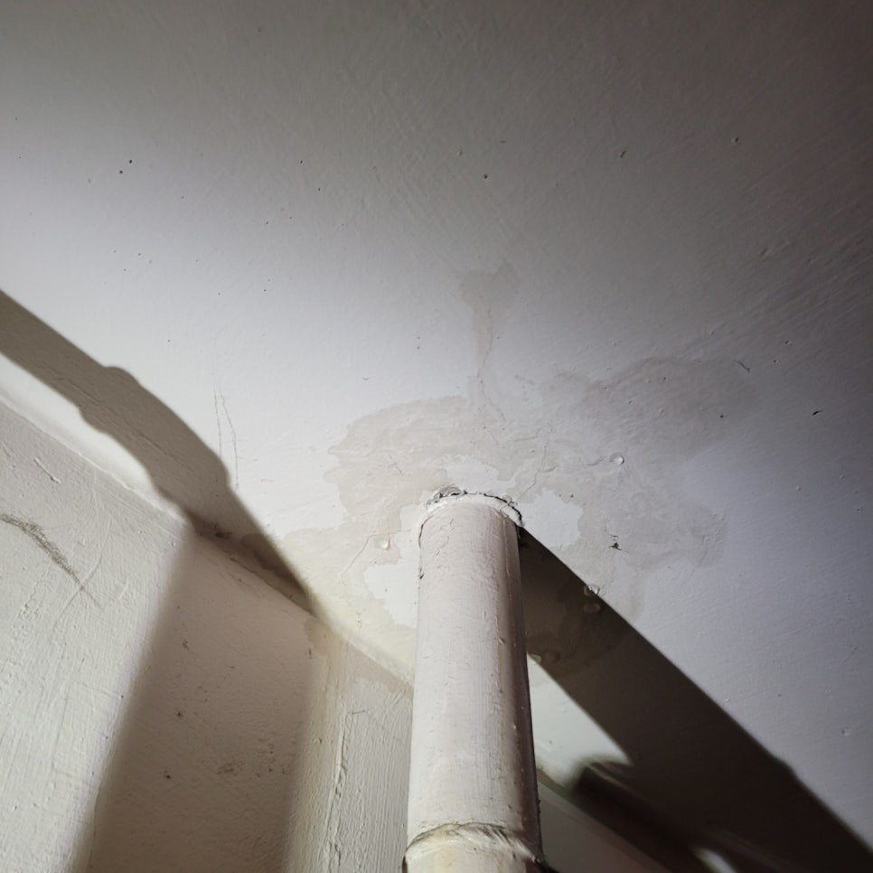
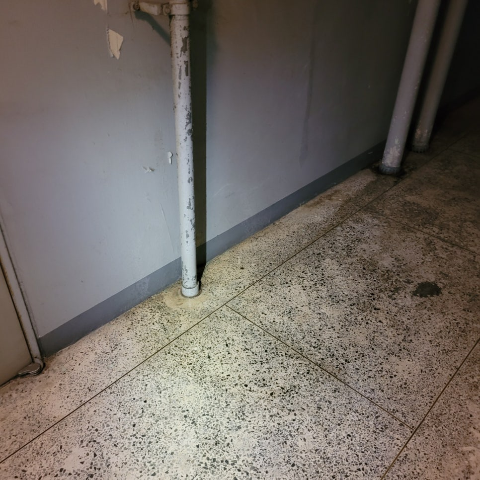
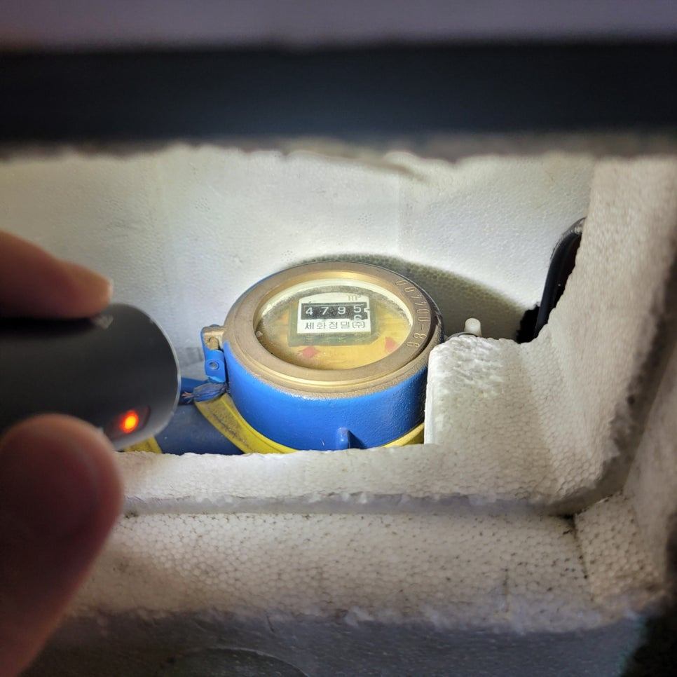
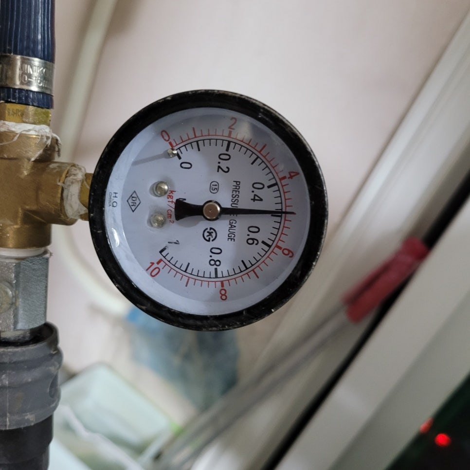
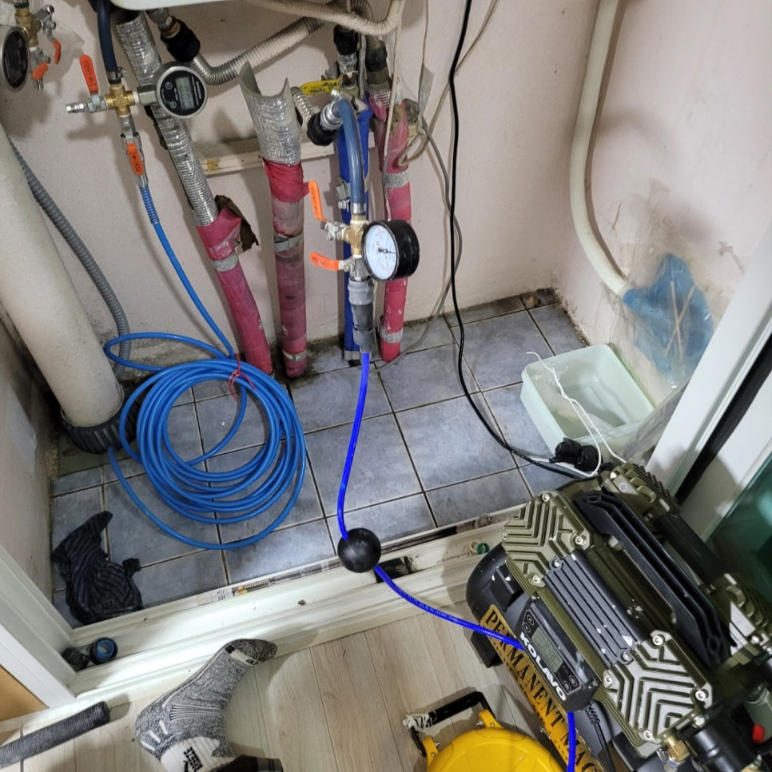
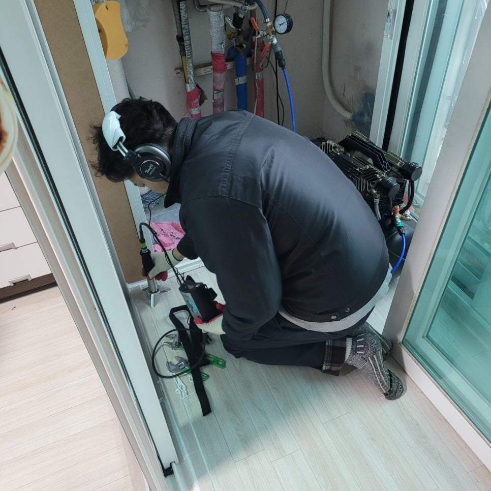
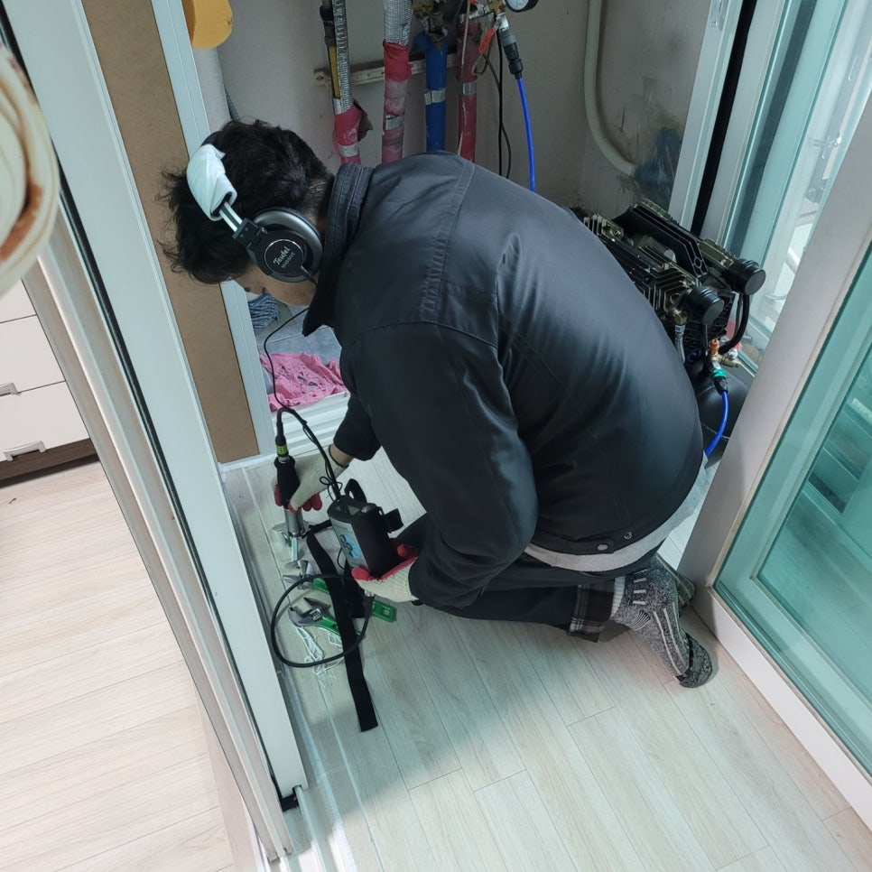

🏠 수원시 장안구 율전동 아파트 누수탐지 공사
수원 배관막힘 전문 시공 후기

📋 작업 개요
- 위치: 수원
- 서비스 유형: 배관막힘, 누수수리, 설비공사
- 작업 일시: 2023. 3. 16. 20:11
- 업체명: 하수구수사대 (010-5615-2118)
🔍 문제 상황
수원시 장안구 율전동 아파트 누수탐지 공사
안녕하세요
오늘은 누수수사대 인사드립니다.
누수로 인하여 피해가 발생하게 되면
몇일간 고생일 하게 됩니다.
빠른 누수원인을 찾아 해결을 누구나
원하시게 될텐데요 장안구누수탐지를 통하여
누수해결을 말씀드리겠습니다.
이날 찾아간곳은 장안구 율전동 에 위치한 벽산아파트인데요
관리실 소장님께서 1층 복도 천장쪽 가스배관에서 물이
떨어진다고 하여 방문 하였습니다.
103호 문앞에 가스배관에 있고 203호 위쪽이였는데
누수가 있을수 있는곳은 203호 출입구쪽에 있는 방에
난방배관을 의심하였습니다.
약식 테스트로 계량기로 누수가 있음을 확인하였고
온수나 난방 둘중에 하나가 분명하다는걸 알수 있었어요.
빠른 탐지를 위하여 바로 공압탐지부터 진행하게 되었습니다.
공압탐지는 곰프레샤를 이용해 배관 내에 들어있는 물을

🔎 원인 분석
💡 전문가 진단: 정밀 진단 장비를 사용하여 슬러지의 고착 여부를 판명하고 타격/세척 작업을 실시했습니다.
빼낸 후 공기를 주입해 누수 발생 지점으로 공기가 새도록
하는 방법입니다.
배관 누수를 확인 할 수 있는 작업으로 배관 누수가
가장 흔하게 발생하기 때문에 기초 작업으로 먼저 탐지를
시작하였습니다.
누수가 되고 있으면 배관압력이 떨어지만서 어떤 배관에서
누수가 있는지를 확인할수 있답니다.
배관은 바닥에 매립되어 있어 외부에서 확인할수가 없기때문에
장비를 통해서 위치를 찾아내고 수리가 가능합니다.
그래서 분배기를 통해 난방배관에 있는 물을 모두 빼내어 공압탐지
검사를 진행하였지만 난방배관에서는 새는곳이 없었습니다.
다음으로 온수배관에 공압검사를 실시 하였는데요
온수배관내에 물을 모두 빼고 테스트를 해보니 온수배관에서
새는것을 확인할수 있었습니다.
배관 누수가 생겨나는 이유는 배관 노후로 인하여 생기는 경우가
많으며 온수,수압의 영향을 받기도 합니다.
또한 설치되어 있는 상황에 따라서도
스트레스를 받아 손상되기도 하는데요
꺽이거나 휘어지거나 배관끼리 맞닿아 있는경우에도

🔧 작업 과정
누수가 될수 있답니다.
온수에 공압을 걸어놓고 청음 작업을 시작하였는데요
청음 작업은 정확한 누수 지점을 찾기 위해
사용하는 방법입니다.
똑같이 배관 내에 공기를 주입해 손상된 곳에서
나는 소리를 잡아 낼수 있습니다.
청음기는 청진기 같은 역할을 하는 장비로서 공기가 새어나오는
부분에서 발생하는 소리를 찾는것입니다.
많은 사례를 탐지해온 만큼 미세한 소리도 놓침없이 듣고 있습니다.
만양 청음기로 확인이 어렵다면 가스탐지기도 사용을합니다.
배관에 가스를 투입하여 새는 위치를 대략적으로 찾아낸뒤
그 부분을 집중적으로 청음탐지하여 찾아내는것입니다.
누수위치는 처음생각했던곳과는 상당히 거리가 있었어요
집들어오는 입구와 반대편인 보일러실에 가까운 거실끝부분이였는데요
누수지점을 확인한뒤 고객님께 설명을 드린후 굴착을 하였습니다.
마루를 제거후 굴착을 시행하니 누수 지점을 확인할수 있었답니다.
배관 주위에 물이 흥건한 상태였는데 수선을 위해서는
정확한 손상범위까지 찾아내게 됩니다.
하지만 그냥 보기에는 손상 지점을 확인하기 어려운 경우도 있습니다.
이러한 경우에는 배관 내에 퐁퐁물을 묻혀 공기방울이 나오거나
거품이 나오는것으로 찾으면 확인할수 있답니다.
터진 위치는 온수배관이 냉수배관위를 지나가게 설치를
하였는데 문제는 배관이 맞닿으면서 온수배관이 살짝 휘어있는것을
확인하였습니다. 휘어진 부분에서 온수가 뜨거워졌다 식었다를
반복하면서 스트레를 받아 배관이 터졌던것입니다.
아파트를 지어진지 20년이 다되어가지만 배관을 닿지않게
시공만 했더라도 손상되지 않았을겁니다.
대부분 누수는 시공불량의 원인이 많답니다.
배관을 휘어놓거나 배관끼라 닿거나 부속불량을 사용해서 누수가
되는게 대부분입니다. 문제는 당장 누수가 발생하는게 아니라


✅ 작업 완료
온수배관의 경우 수년이 지나서야 발생하니 시공자에게 책임을
돌릴수가 없는것이 안타까울뿐입니다.
이런 피해를 예방하기 위해서는 보험을 들어 놓는것도
하나의 방법인데요 대부분 화재보험같은 특약에 "일상배상책임보험"이
들어있다면 금전적인 피해를 최소화 할수 있으니 알아보기 바랍니다.
위치를 찾아낸후 빠른 수리를 통해 해결해 드렸는데요
이처럼 누수가 되고있다면 피해가 더 커지기 전에
빠르게 해결하는것을 추천드립니다.




⚠️ 베란다 누수 및 방수 관리 방법
- ✅ 비가 많이 올 때 창틀 주변이나 아래층 천장에 얼룩이 생기는지 정기적으로 확인해 보세요.
- ✅ 우수관 주변 실리콘 마감이 들뜨거나 깨진 틈새가 있는지 손상 여부를 수시로 체크하세요.
- ✅ 베란다 바닥 타일의 줄눈(메지)이 소실되면 그 틈으로 물이 침투하여 누수가 유발됩니다.
- ✅ 누수 의심 증상 발견 시 방치하면 아래층 손실이 커지므로 즉시 전문가의 진단을 받으십시오.
💡 핵심 정리
- 확실한 장비 작업(내시경 점검 및 샤프트 스케일링)으로 원인을 뿌리 뽑습니다.
- 작업 후 1년 이내에 동일한 부위 재발 시 100% 무상 A/S 서비스를 보장합니다.
- 서울 · 경기 · 인천 전 지역에 24시간 언제든 긴급 출동할 수 있도록 항시 대기 중입니다.
❓ 자주 묻는 질문 (FAQ)
🚨 수원 배관막힘 문제로 고민이신가요?
정확한 원인 진단과 확실한 시공으로 재발 없는 해결을 약속드립니다.
24시간 긴급 출동 | 서울 · 경기 · 인천 전지역 | 1년 내 재발 시 무상 A/S